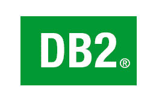

IBM DB2About IBM DB2IBM DB2 is a family of database server products developed by IBM. These products all support the relational model, but in recent years some products have been extended to support object-relational features and non-relational structures, in particular XML. Historically and unlike other database vendors, IBM produced a platform-specific DB2 product for each of its major operating systems. However, in the 1990s IBM changed track and produced a DB2 "common server" product, designed with a common code base to run on different platforms. HistoryDB2 traces its roots back to the beginning of the 1970s when Edgar F. Codd, a researcher working for IBM, described the theory of relational databases and in June 1970 published the model for data manipulation. In 1974 the IBM San Jose Research center developed a relational DBMS, System R, to implement Codd's concepts. A key development of the System R project was SQL. To apply the relational model Codd needed a relational database language he named DSL/Alpha. At the time IBM didn't believe in the potential of Codd's ideas, leaving the implementation to a group of programmers not under Codd's supervision, who violated several fundamentals of Codd's relational model; the result was Structured English QUEry Language or SEQUEL. When IBM released its first relational database product, they wanted to have a commercial-quality sublanguage as well, so it overhauled SEQUEL and renamed the basically new language Structured Query Language (SQL) to differentiate it from SEQUEL. The acronym SEQUEL was changed to SQL because "SEQUEL" was a trademark of the UK-based Hawker Siddeley aircraft company.  Click on the Image to view the complete IBM DB2 Tutorial |